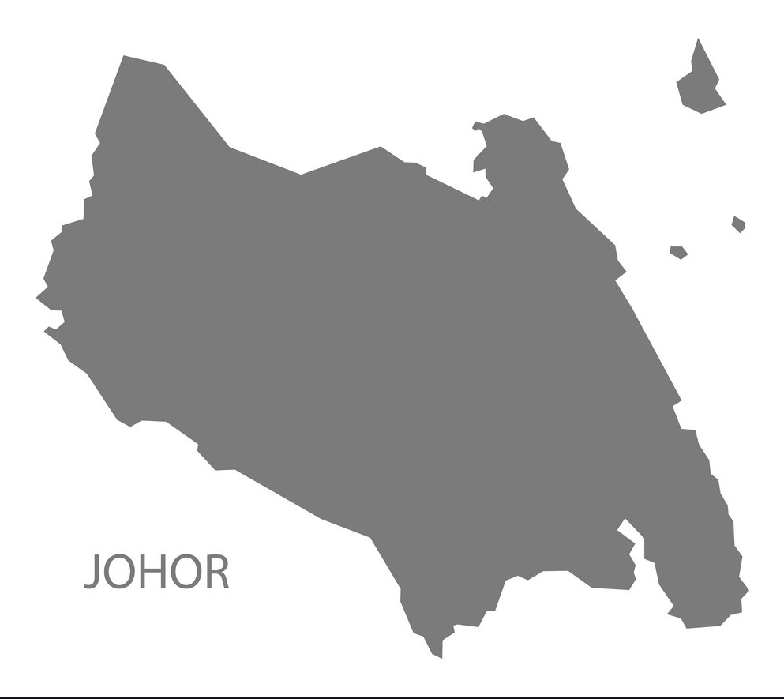

JOHOR

Dishes in Johor are influenced by Maritime Southeast Asian and Arabian cultures. Some recipes include ingredients that are not found elsewhere in Malaysia. There are even dishes that are so complex to prepare that they can be tasted only during state banquets and celebrations. Some of the popular dishes in Johor are:
Johor Cuisine
Arisa: It is a rare and unique chicken dish that is, nowadays, served only to elites and royalties in Johor at formal celebrations and functions.
Penganan Kacau Keledek: Another dish that typically the monarchs and elites of Johor can enjoy. This dessert is made of sweet potatoes, tens of eggs, fresh coconut milk and ample sugar.
Other dishes that are popular in or unique to Johor are ABC, Burasak, Halwa Maskat, Ikan Masak Asam Pedas, Kacang Pol, Kerutup Ikan, laksa Johor, Lontong, Mee Bakso, Mee Bandung Muar, Mee Rebus, Mee Siput, Mee Soto, Nasi Beriani Gam, Otak-Otak, Pecal, Pendaram, Pisang Salai, Rojak Petis, Roti Kirai or Roti Jala, Satay, Tauhu Bakar and Telur Pindang.
Some of these dishes such as Laksa Johor and Roti Jala are prepared special Johor touch. On the other hand, Halwa Maskat is a direct lift from Oman.
Kacang Pool
Kacang Pool or Kacang Phool is a rather popular food in Johor Bahru, and everyone seems to be talking about Kacang Pool Pak Haji at Larkin. As this dish is adapted from the Middle eastern way of eating fava bean, I think the name Kacang Pool most likely got its name from the Egyptian word foul (or pronounced “ful”) for fava bean. Foul Medames is considered to be Egyptian’s national breakfast.
In Malaysia, you might have been munching on fava beans (or broad bean) for years without even knowing it. At the kacang putih stall, look out for these salty crunchy beans is with its skin split open. I was fortunate to have a friend bring back some fresh fava beans from middle east as now (spring) is the harvesting season. Preparing favas involves first removing the beans from their pods, then parboiling the beans to loosen their exterior coating, and removing that before cooking
As fava beans are seasonal produce, they are enjoyed all year round in dried form. The taste of the fresh fava have a slight bittertaste as compared to the creamy texture of the dried ones. This Kacang Pool dish uses dried beans which cannot be found here in KL, therefore canned Foul Medammas is used for this recipe.
To take note: Fava beans can be harmful to some people have enzyme deficiencies of the blood and develop anemia.
Laksa Johor
One simply does not go to Johor without eating Laksa Johor. This unique dish is a cross of east meets west with its spaghetti base creamy fish broth. It is believed that the story of Laksa Johor came about when the “Founder of Modern Johor”, Sultan Abu Bakar, instructed his chefs to use spaghetti instead of the traditional rice noodles.
Apparently, the Sultan had acquired a love for the pasta during his travels to Italy.
What really completes the dish are the garnishings such as cucumber, bean sprouts, long beans, and Thai basil just to name a few. It is also labour intensive to make which makes it even more special to eat.
Mee Rebus
Johor's mee rebus heavily relies on its brownish gravy, which can make or break the dish. Thick and heavy (yet not starchy), it is savoury with a nutty nuance as well as slightly sweet and spicy from the curry spices. It is typically served over yellow noodles, with a dash of soy sauce and vinegar.
You will also find the tulang version in Johor, which is unique to the state. It comes with a lamb shank bone, which one can suck savoury bone marrow from with a drinking straw!